Home
Categories
Gallery
Recipes
Contact Us
Categories
Breakfast
Breakfast
×
Indian breakfast can provide a range of health benefits such as high fiber, low saturated fat, rich in nutrients, and can promote weight loss. Incorporating fresh, whole ingredients and a variety of flavors and spices can make for a healthy and satisfying start to your day.
Poha
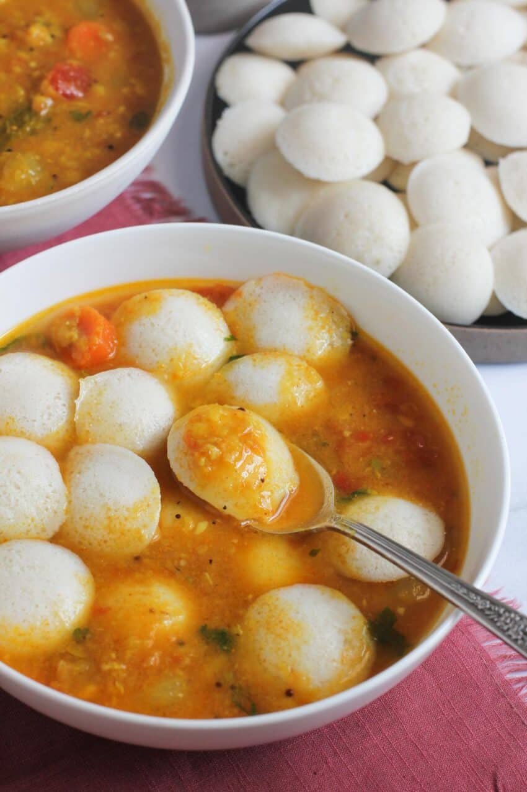
Idli Sambar
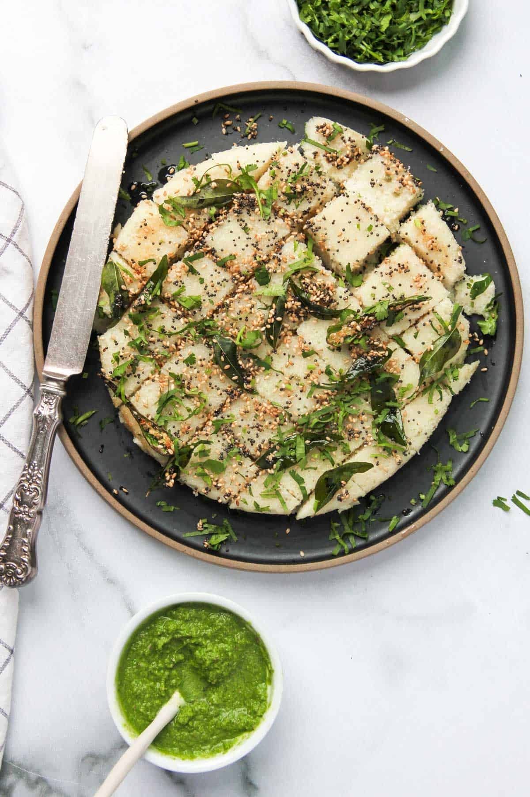
Rava Dhokla
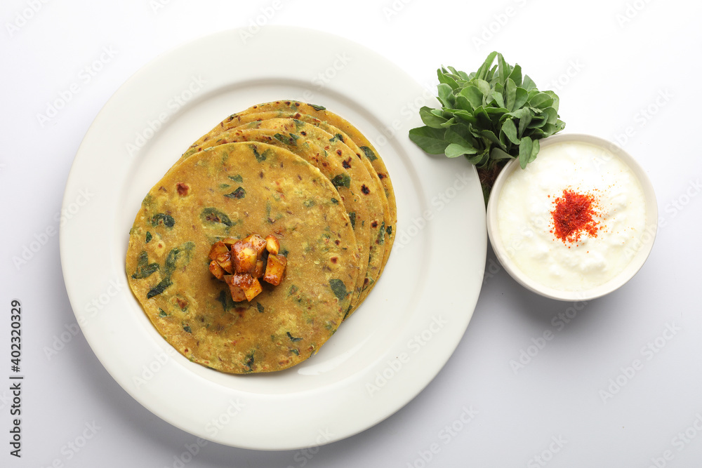
Thepla
Khaman
North Indian
North Indian
×
North Indian cuisine can provide a range of health benefits such as rich in proteins, vitamins, and minerals, may aid digestion, and can help in maintaining a healthy weight. It incorporates a variety of whole grains, legumes, vegetables, and lean proteins that can provide a balanced diet. Additionally, the use of spices and herbs in cooking can provide added health benefits and may help in reducing inflammation and boosting immunity.
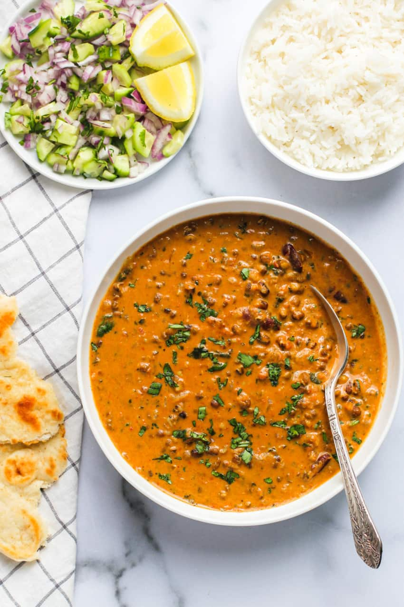
Dal Makhani
Paneer Butter Masala
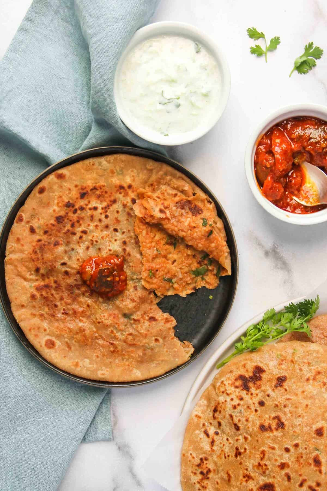
Aloo Paratha
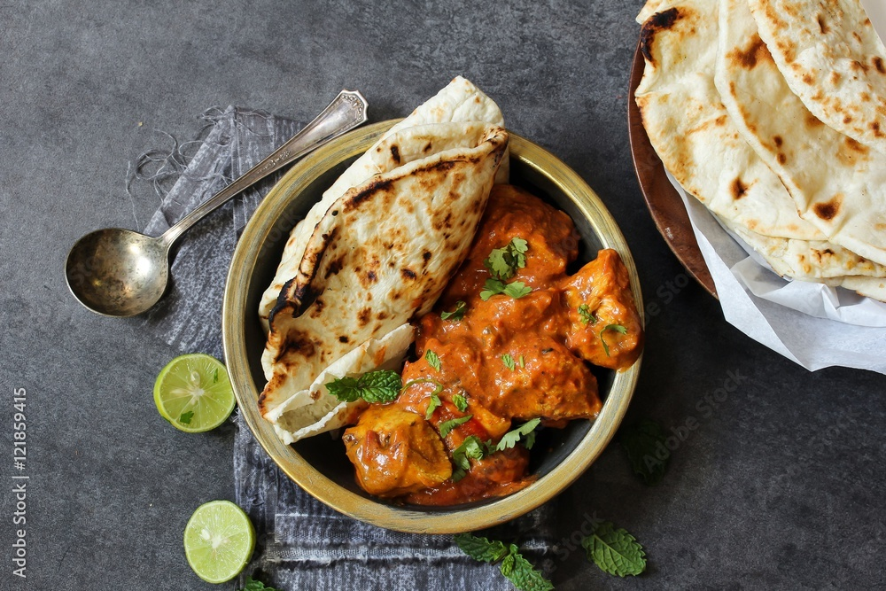
Butter Chicken
South Indian
South Indian
×
South Indian food can provide a range of health benefits such as being rich in fiber, vitamins, and minerals, can help in regulating blood sugar levels, and may promote weight loss. The use of whole grains, legumes, fresh vegetables, and coconut in cooking can provide a balanced and nutrient-dense diet. Additionally, the fermentation process used in some South Indian dishes like idlis and dosas can improve gut health and aid digestion. The use of spices and herbs in cooking can also provide added health benefits and may help in reducing inflammation and improving immunity.
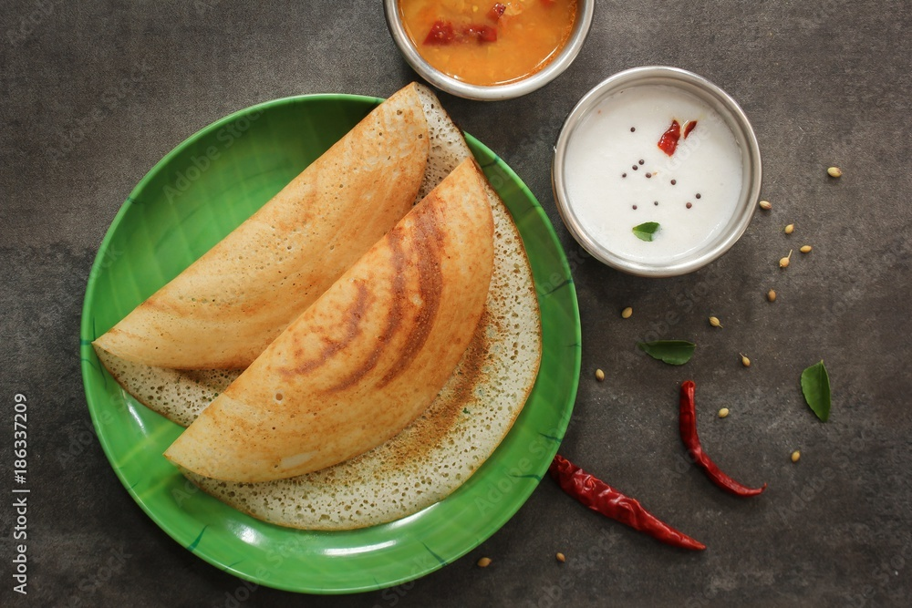
Dosa
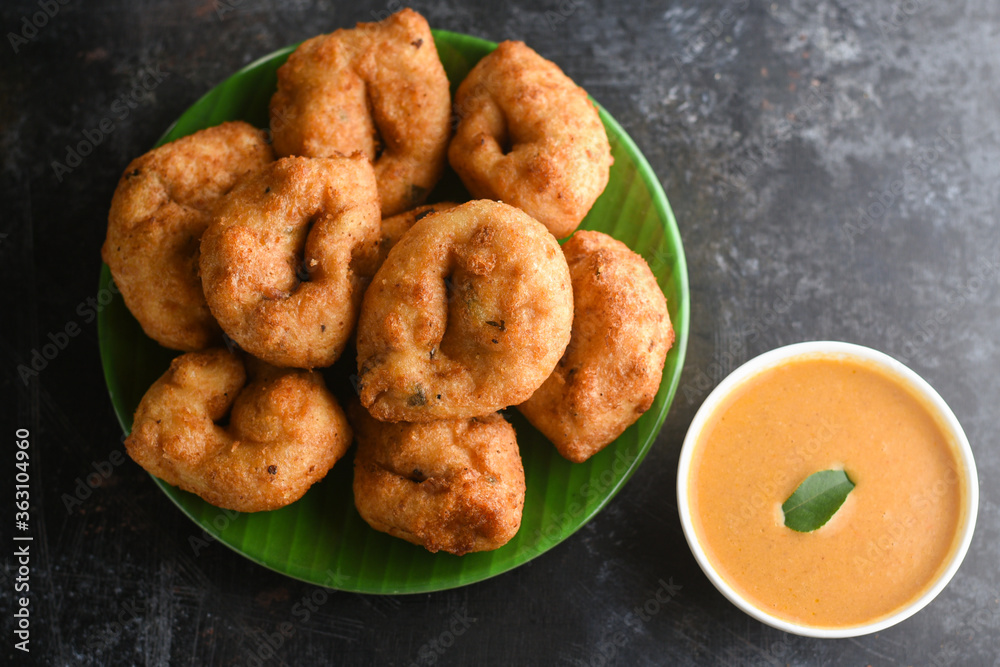
Medu Vada
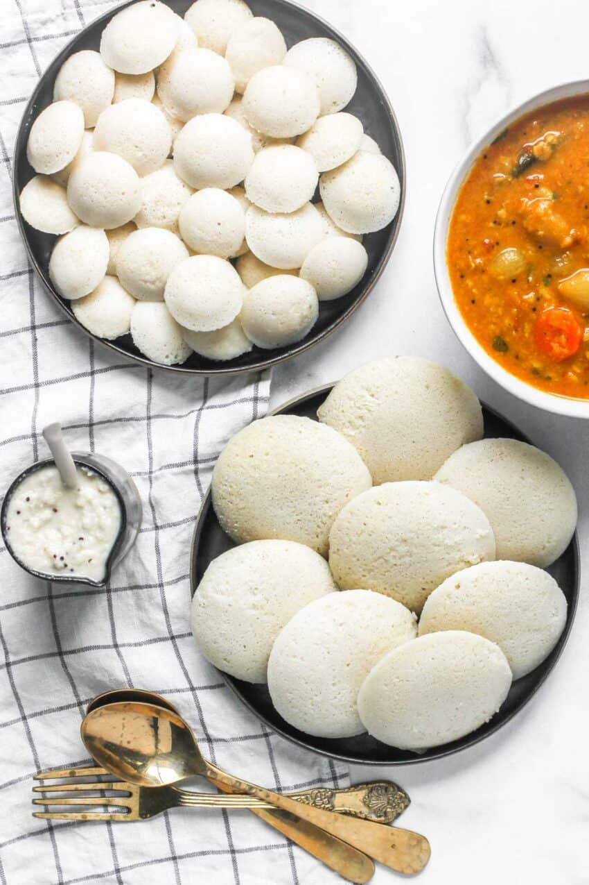
Idli
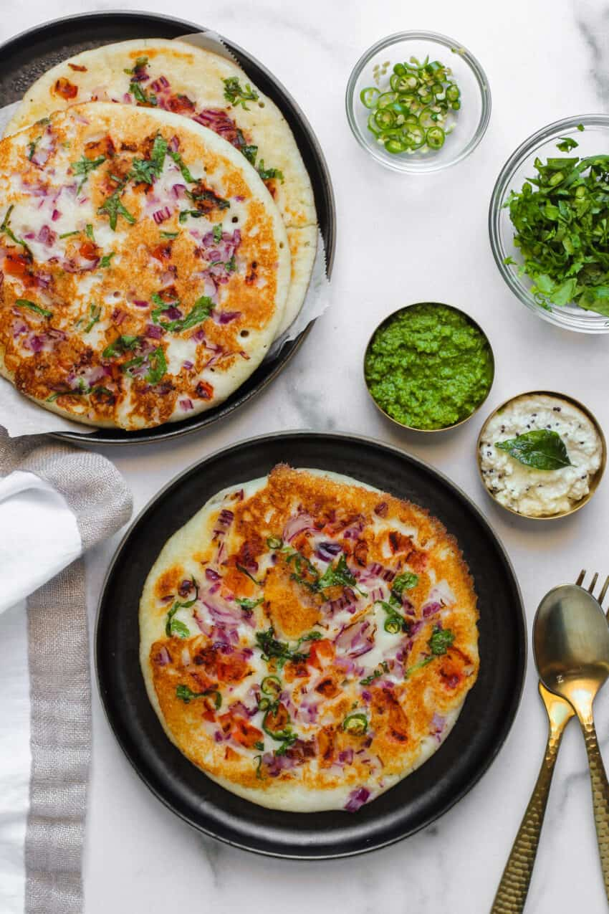
Uttapam
Street Food
Street Food
×
Indian street food is often readily available and easy to grab on the go, making it a convenient option for busy people.
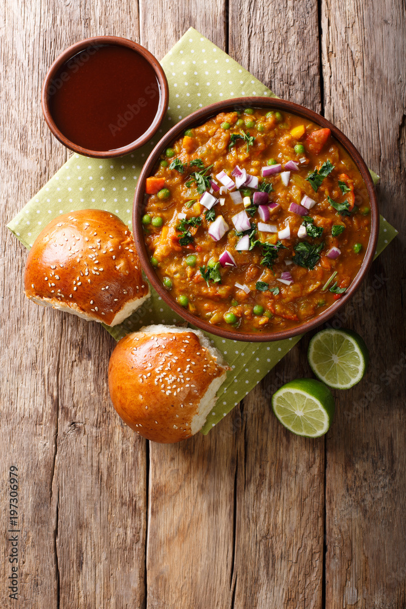
Pav Bhaji
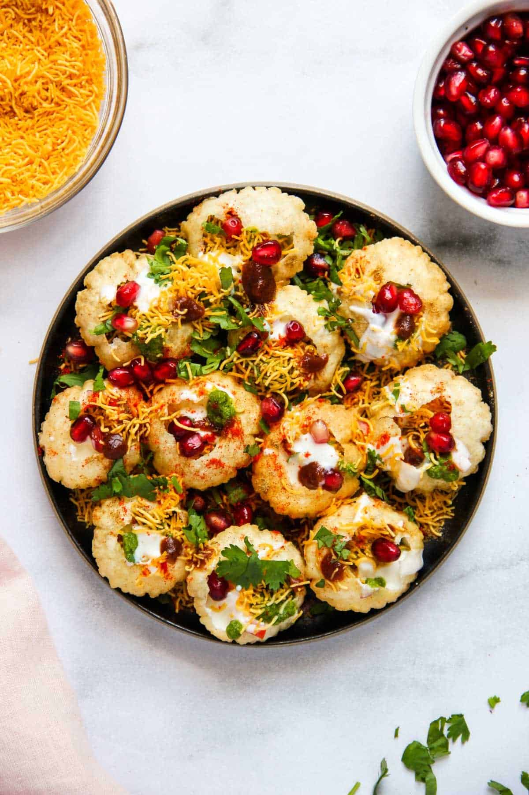
Dahi Puri
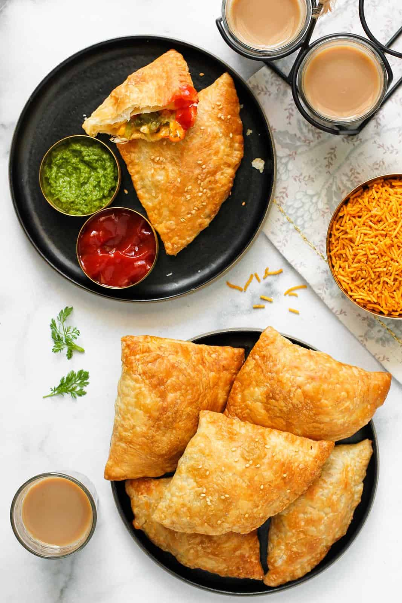
Samosa
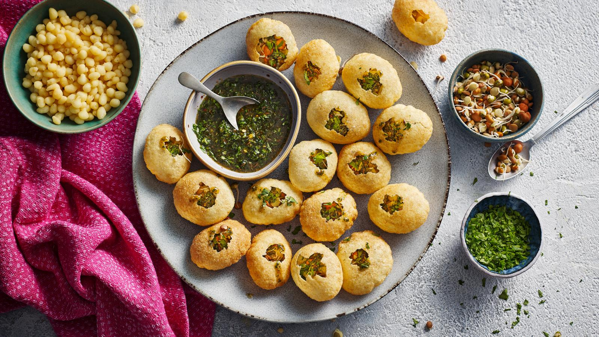
Pani Puri